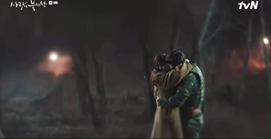

"너와 함께한 시간 모두 눈부셨다. 날이 좋아서, 날이 좋지 않아서, 날이 적당해서, 모든 날이 좋았다."
주연 배우 공유·김고은 · 촬영지: 영진해변 방사제. 눈 내리는 밤하늘 아래 김신이 지은탁에게 남긴 마지막 인사.
#도깨비 #공유 #김고은
TVING
#설레는
도깨비 (2016~2017) · 첫사랑의 물리학
04화 54:30
쓸쓸하고 찬란하神 – 도깨비김신 (공유) · 지은탁 (김고은)
"(질량의 크기는 부피와 비례하지 않는다 제비꽃같이 조그마한 그 계집애가 꽃잎같이 하늘거리는 그 계집애가 지구보다 더 큰 질량으로 나를 끌어당긴다 순간, 나는 뉴턴의 사과처럼 사정없이
그녀에게로 굴러 떨어졌다 쿵 소리를 내며, 쿵쿵 소리를 내며 심장이 하늘에서 땅까지 아찔한 진자운동을 계속하였다) 첫사랑이었다"
주연 배우 공유·김고은 · 가을 단풍과 분수대 앞에서 시집을 읽던 김신이 첫사랑을 자각하는 순간.
#첫사랑 #사랑의물리학 #가을
TVING
#설레는
도깨비 (2016~2017) · 빨간 목도리 고백
01화 63:18
쓸쓸하고 찬란하神 – 도깨비지은탁 (김고은)
"사랑해요"
주연 배우 공유·김고은 · 빨간 목도리를 두른 지은탁이 돌담길에서 환하게 웃으며 도깨비에게 건넨 솔직한 고백.
#빨간목도리 #지은탁 #고백
TVING
#가슴 벅찬
도깨비 (2016~2017) · 영진해변 방사제
01화 46:05
쓸쓸하고 찬란하神 – 도깨비김신 (공유) · 지은탁 (김고은)
"메밀꽃 꽃말이 뭔지 아세요? 연인이래요."
주연 배우 공유·김고은 · 촬영지: 강릉 영진해변 방사제. 지은탁의 생일 촛불을 끄자 바다 위로 소환된 도깨비.
#영진해변방사제 #메밀꽃 #첫만남
TVING
#가슴 벅찬
나의 해방일지 (2022) · 성환역, 천안 성환읍
02화 59:40
나의 해방일지염미정 (김지원)
"날 추앙해요 사랑으론 안돼 추앙해요"
주연 배우 김지원·손석구 · 촬영지: 성환역, 천안 성환읍 일대. 염미정이 구씨에게 던진 가장 강렬하고 절절한 한마디.
#추앙 #염미정 #성환역
Wavve
#여운 깊은
나의 해방일지 (2022) · 성환역, 천안 성환읍
11화 48:15
나의 해방일지구씨 (손석구) · 염미정 (김지원)
"이것만은 알아둬라 나 너 진짜 좋아했다"
주연 배우 김지원·손석구 · 촬영지: 성환역, 천안 성환읍 일대. 담담하지만 진심이 고스란히 전해진 구씨의 고백.
#구씨 #손석구 #고백
TVING
#유쾌한
나의 해방일지 (2022) · 성환역, 천안 성환읍
14화 22:08
나의 해방일지구씨 (손석구)
"한 시간 내로 살빼고 나와"
주연 배우 김지원·손석구 · 다시 연락이 닿은 미정에게 투박하지만 다정하게 건넨 구씨다운 한마디.
#손석구 #구씨 #설렘
Wavve
#눈물 나는
나의 해방일지 (2022) · 재회의 걸음
15화 36:50
나의 해방일지구씨 (손석구) · 염미정 (김지원)
"보고싶었다. 무진장. 말하고 나니까 진짜같다. 진짜 무지 보고싶었던 것 같다."
주연 배우 김지원·손석구 · 오랜 기다림 끝에 나란히 다리를 건너며 터져 나온 구씨의 진심.
#재회 #무진장 #김지원
TVING
#여운 깊은
사랑의 불시착 (2019~2020) · 서귀포 치유의 숲
01화 24:10
사랑의 불시착윤세리 (손예진)
"팀장님 바람이 왜 부는 것 같아요? 지나가려고 부는 거예요. 머물려고 부는 게 아니고."
주연 배우 현빈·손예진 · 촬영지: 서귀포 치유의 숲, 충주 비내섬, 영월 봉래산 등.
촬영지 블로그 보기
#윤세리 #손예진 #바람

TVING
#심장 쫄깃한
사랑의 불시착 (2019~2020) · 분계선 이별
09화 67:40
사랑의 불시착리정혁 (현빈) · 윤세리 (손예진)
"한 걸음정돈 괜찮갔지"
주연 배우 현빈·손예진 · 촬영지: 서귀포 치유의 숲, 충주 비내섬, 영월 봉래산 등. 군사분계선 너머로 한 걸음 내디딘 순간.
#리정혁 #현빈 #분계선
Wavve
#눈물 나는
사랑의 불시착 (2019~2020) · 충주 비내섬
16화 74:15
사랑의 불시착리정혁 (현빈) · 윤세리 (손예진)
"간절히 기다리고 기도하믄 보고싶은 사람 만날수 있냐고 묻지 않있소 만날수 있소"
주연 배우 현빈·손예진 · 노을빛 아래 눈시울을 붉히며 세리에게 약속을 건네는 리정혁의 마지막 장면.
#재회약속 #현빈 #눈물
TVING
#설레는
사랑의 불시착 (2019~2020) · 영월 봉래산 ·
스위스
16화 89:20
사랑의 불시착리정혁 (현빈)
"아 떨어진게 아니고 강림이랬나?"
주연 배우 현빈·손예진 · 패러글라이딩으로 내려앉은 세리를 향해 미소 짓는 설산 엔딩 명장면.
#강림 #스위스 #엔딩
전국 영상 촬영지 DB 검색 결과 (0건)
출처: 한국문화정보원 미디어콘텐츠 영상 촬영지 데이터
씬 아카이브
나만의 기록과 스크랩 아카이브
내가 기록한 장면
씬 렌즈 스크랩
나만의 컬렉션+ 새 컬렉션
도깨비 · 영진해변
공유 · 김고은 · 4장면
나의 해방일지 · 성환역
김지원 · 손석구 · 4장면
사랑의 불시착 · 설산
현빈 · 손예진 · 4장면
전체 (6)
#설레는
#가슴 벅찬
#여운 깊은
#심장 쫄깃한
#눈물 나는
13화
58:12공개
#여운 깊은
쓸쓸하고 찬란하神 –
도깨비 · 김신 (공유) & 지은탁 (김고은)
"너와 함께한 시간 모두 눈부셨다. 날이 좋아서, 날이 좋지 않아서, 날이 적당해서, 모든 날이 좋았다."
촬영지: 영진해변 방사제 · 겨울만 되면 꼭 다시 꺼내 보는 인생 명대사.
04화
54:30공개
#설레는
쓸쓸하고 찬란하神 –
도깨비 · 지은탁 (김고은) & 김신 (공유)
"(질량의 크기는 부피와 비례하지 않는다 제비꽃같이 조그마한 그 계집애가...) 첫사랑이었다"
가을 햇살 속에서 뛰어오는 은탁이와 김신의 내레이션이 완벽하게 어우러진 장면.
02화
59:40비공개
#가슴 벅찬
나의 해방일지 ·
염미정 (김지원)
"날 추앙해요 사랑으론 안돼 추앙해요"
촬영지: 성환역, 천안 성환읍 일대 · 이 대사 나왔을 때 숨이 멎는 줄 알았던 명장면.
11화
48:15비공개
#여운 깊은
나의 해방일지 · 구씨
(손석구) & 염미정 (김지원)
"이것만은 알아둬라 나 너 진짜 좋아했다"
촬영지: 성환역, 천안 성환읍 일대 · 담백하게 툭 던진 한마디의 여운이 오래 남는 장면.
09화
67:10공개
#심장 쫄깃한
사랑의 불시착 ·
리정혁 (현빈) & 윤세리 (손예진)
"한 걸음정돈 괜찮갔지"
촬영지: 서귀포 치유의 숲, 충주 비내섬, 영월 봉래산 등 · 선을 넘어 달려가던 잊지 못할 이별 장면.